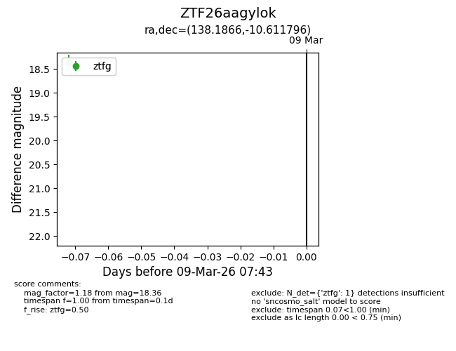
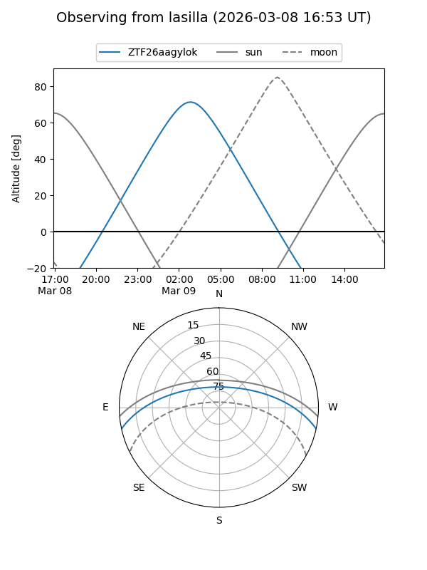
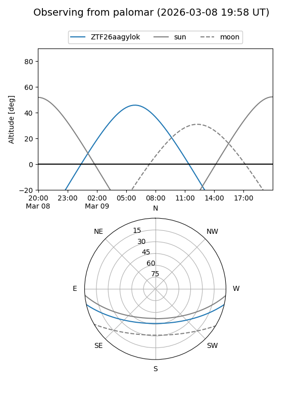

ZTF26aagylok
Target ZTF26aagylok at 2026-03-09 07:44
Aliases and brokers:
FINK: link
Lasair: link
ALeRCE: link
alt names
ZTF26aagylok (ztf,fink_ztf)
Coordinates:
equatorial (ra, dec) = 138.1866,-10.61180
equatorial (HMS+DMS) = 09:12:44.79,-10:36:42.46
galactic (l, b) = (240.7462,+24.95195)
Flags:
Photometry:
last ztfg=18.36
1 ztfg detections
Lightcurve

Visibility


Additional plots